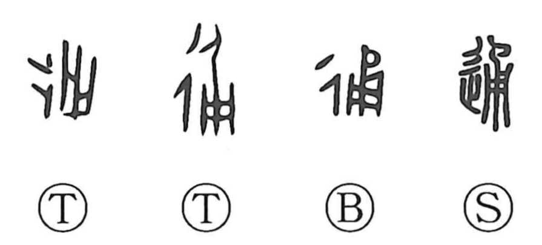

Explanation
通 combines 辵, movement, with 甬 as its phonetic. 甬 represents a bucket-like vessel; the related sound family includes hollow cylindrical things, open through the middle. This provides an association with passage and unobstructed connection.
The central meaning is reaching through or extending across an entire span. A bronze expression uses it of continuing prosperity and a long life, applying the word from beginning to end.
From passage come going through, travelling back and forth, reaching a destination, and communication between places. Something can also pervade a whole area. Applied to knowledge, 通 is being thoroughly familiar with a subject or understanding how its parts connect. The movement element places these relations within the action of passing and reaching.